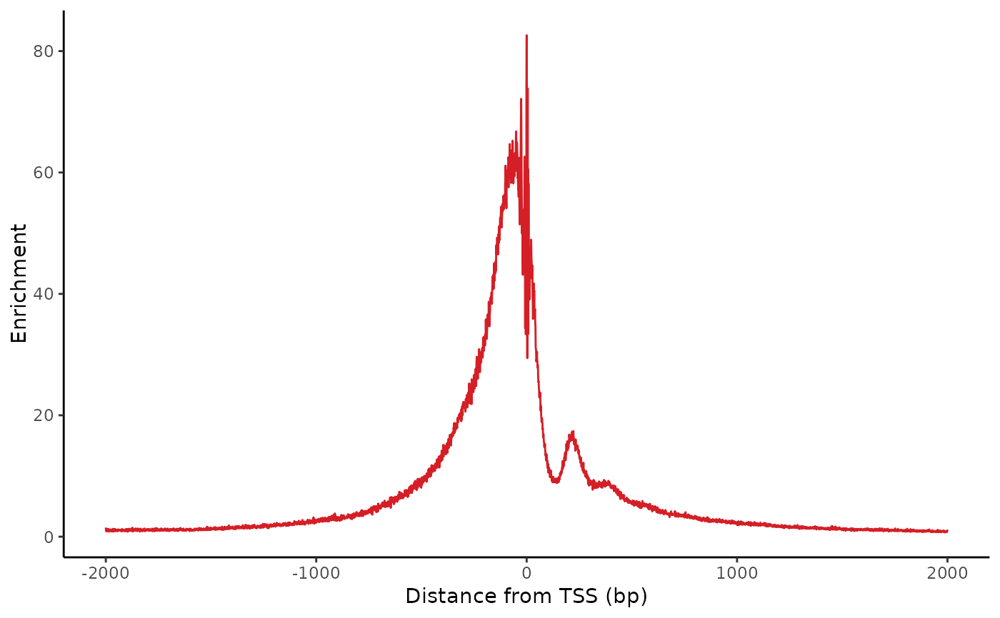

Plot the enrichmment of insertions relative to transcription start sites (TSS). Typically, this plot shows strong enrichment of insertions near a TSS, and a small bump downstream around 220bp downstream of the TSS for the +1 nucleosome.
Usage
plot_tss_profile(
fragments,
genes,
cell_groups = rlang::rep_along(cellNames(fragments), "all"),
flank = 2000L,
smooth = 0L,
zero_based_coords = !is(genes, "GRanges"),
colors = discrete_palette("stallion"),
return_data = FALSE,
apply_styling = TRUE
)Arguments
- fragments
IterableFragments object
- genes
Coordinate ranges for genes (must include strand)
- cell_groups
Character or factor assigning a group to each cell, in order of
cellNames(fragments)- flank
Number of flanking basepairs to include on either side of the motif
- smooth
Number of bases to smooth over (rolling average)
- zero_based_coords
If true, coordinates start and 0 and the end coordinate is not included in the range. If false, coordinates start at 1 and the end coordinate is included in the range
- return_data
If true, return data from just before plotting rather than a plot.
- apply_styling
If false, return a plot without pretty styling applied
Examples
## Prep data
frags <- get_demo_frags(filter_qc = FALSE, subset = FALSE)
genes <- read_gencode_transcripts(
file.path(tempdir(), "references"), release = "42",
annotation_set = "basic",
features = "transcript"
)
## Plot tss profile
plot_tss_profile(frags, genes)
